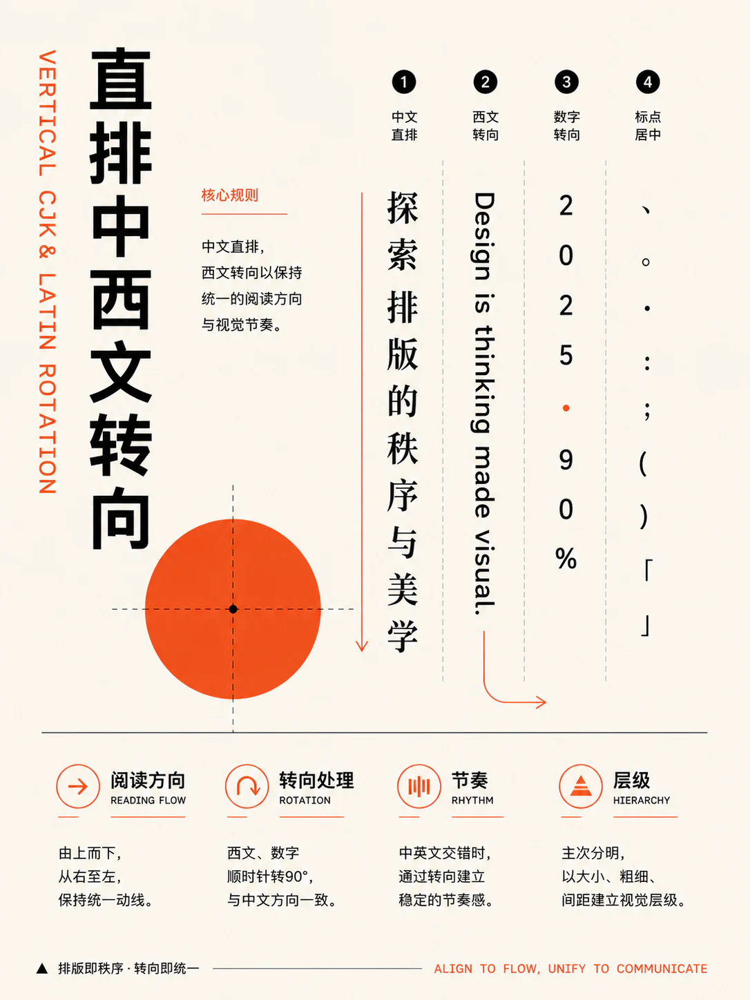

书脊、腰封与典籍封面
中文书名竖排定调，英文副题、卷号与年份顺时针转 90° 接在下方，读者歪一次头就能把整条书脊一气扫完。
WHY +90° CLOCKWISE KEEPS ONE READING FLOW
原海报把第一条原则写得很明白：「由上而下，从右至左，保持统一动线。」拉丁文字原本从左向右读，放进自上而下的直排中只有一种转法能让它的首尾顺序仍指向下方——那就是顺时针旋转 90°。
AI、VIP、NO.）或极具装饰感的竖式招牌。这套做法专门在
219 直排中西文直立
展开；一旦进入多词短语或完整英文句子，顺时针 90° 才是阅读阻力最小的正解。
UNICODE UAX #50 · NUMERALS & VERTICAL PUNCTUATION
真正决定直排像「专业书刊」还是「硬敲回车」的，不只是英文字母，还有数字和标点。Unicode UAX #50 把全部字符分成 U（直立）、R（顺转）、Tr（转形优先，退回顺转）、Tu（转形优先，退回直立）四类，点开下面任意字符看清规则。
点按检视 8 类典型字符
OPTICAL CENTERLINE, SCALE & QUARTER-EM BREATHING
同样是顺时针转了 90°，为什么有的版面精致得像画册，有的却总觉得英文歪在一边、贴着汉字喘不过气？把单条竖行放大四倍，问题全落在三个毫米级细节里：光学中轴、中西比例与四分空。
1. 基线定位基准
2. 中西交界间隙（CLReq / JLReq 推荐四分空）
FROM MOVABLE TYPE TO JIS X 4051, UAX #50 & CSS
直排中西文顺时针转 90° 并非设计师的拍脑袋约定，而是从东亚铅字排印一路走过日本工业标准、Unicode 字符集与 W3C 网络规范的百年共识。点选年份查看演进脉络。
WHEN TO ROTATE IN VERTICAL CJK — AND WHEN TO STOP
再优雅的转向规则也有边界。英文只作短词点缀时，顺转 90° 能把秩序感拉满；一旦西文、数字或公式反客为主，强行直排只会折磨读者。
中文书名竖排定调，英文副题、卷号与年份顺时针转 90° 接在下方，读者歪一次头就能把整条书脊一气扫完。
东亚语境的视觉海报需要竖向仪式感，夹带的展馆英文名、日期与规格数字顺转后不再撑宽竖列，留白干脆利落。
传统繁体及日文直排书页偶现外文人名、地名与书名号，顺转 90° 让整页灰度和竖排栏高始终稳如网格。
超过一整列的英文段落若全篇顺转 90°，读者脖子会很快酸痛。英文占比高或代码密集的内容，老老实实回到横排。
多列数字比对、URL 链接、价格清单依赖横向小数点对齐与水平扫读，强行竖排转向会大幅增加核对出错率。
手机屏幕天然窄高且习惯纵向滚屏，直排文本若折成多列反而迫使手指横向拖拽，只宜在首图标题或窄条标签里克制使用。
如果你要解决的不是「直排里西文怎么转」，可以直接跳去对应页面：
PRACTICE · ONE CONTROLLED VARIABLE AT A TIME
ORIGINAL POSTER SPECIMEN & KEYWORDS
